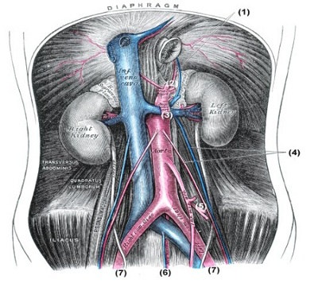
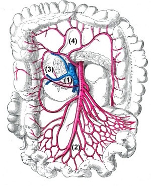
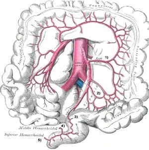

You are here: Urology Textbook > Anatomy > Abdominal cavity > Arteries
Anatomy of the Abdominal Cavity: Arteries (3/4)
- Anatomy of the abdominal cavity: Muscles (1/4)
- Anatomy of the abdominal cavity: Nervous system (2/4)
- Anatomy of the abdominal cavity: Arteries (3/4)
- Anatomy of the abdominal cavity: Veins and lymphatic system (4/4)
|  |
Parietal Branches of the Abdominal Aorta
The numbers behind the arteries refer to Fig. branches of the aorta.
Inferior Phrenic Arteries (1):
Paired artery which supply the diaphragm with a high variety. Each artery gives off branches to the adrenal gland (superior suprarenal artery).
Lumbar Arteries:
Paired arteries of usually 4–5 segments which supply the abdominal wall. They run on both sides behind the sympathetic trunk and on the right side behind the inferior vena cava.
Visceral Branches of the Abdominal Aorta
The numbers behind the arteries refer to Fig. branches of the aorta:
Celiac Trunc (2):
- Left gastric artery
- Commen hepatic artery: further division into proper hepatic artery, right gastric artery, gastroduodenal artery, superior pancreaticoduodenal artery and right gastroepiploic artery.
- Splenic artery: on the way to the spleen the following branches: to the pancreas, left gastroepiploic artery, short gastric arteries and posterior gastric artery.
Superior Mesenteric Artery (3):
The numbers behind the branches of the superior mesenteric artery (SMA) refer to fig. branches of the superior mesenteric artery:
- Inferior pancreaticoduodenal artery (1)
- Jejunal and ileal arteries (2)
- Middle colic artery (4)
- Right colic artery (3)
|  | Branches of the superior mesenteric artery: Inferior pancreaticoduodenal artery (1), jejunal and ileal arteries (2), middle colic artery (4), right colic artery (3). figure from Gray’s Anatomy, Lea and Febinger 1918, Philadelphia, USA. |
Paired Visceral Branches of the Aorta:
The numbers behind the arteries refer to Fig. branches of the aorta.
- Middle suprarenal arteries
- Renal arteries, with branches to the adrenals (superior suprarenal arteries).
- Gonadal arteries (Testicular arteries or ovarian arteries) (4)
Inferior mesenteric artery (5):
The numbers behind the branches of the inferior mesenteric artery (IMA) refer to fig. branches of the inferior mesenteric artery:
- Left colic artery (1)
- Sigmoid arteries (2)
- Superior rectal artery (3)
|  | Branches of the inferior mesenteric artery: left colic artery (1), sigmoid arteries (2) and superior rectal artery (3). Figure from Gray’s Anatomy, Lea and Febinger 1918, Philadelphia, USA. |
Median Sacral Artery (6):
Unpaired artery in extension of the aorta to the anterior surface of the sacrum.
Common Iliac Arteries (7):
The aorta divides at the aortic bifurcation into the paired common iliac arteries, which supply the pelvic viscera and lower limb.
| Abdomen Nerves (2/4) | Index | Abdomen Veins (4/4) |
Index: 1–9 A B C D E F G H I J K L M N O P Q R S T U V W X Y Z
References
- Benninghoff 1993 BENNINGHOFF, A.:
- Makroskopische Anatomie, Embryologie und Histologie des
Menschen.
15. Auflage.
München; Wien; Baltimore : Urban und Schwarzenberg, 1993
 Deutsche Version: Anatomie Abdomen: Arterien
Deutsche Version: Anatomie Abdomen: Arterien